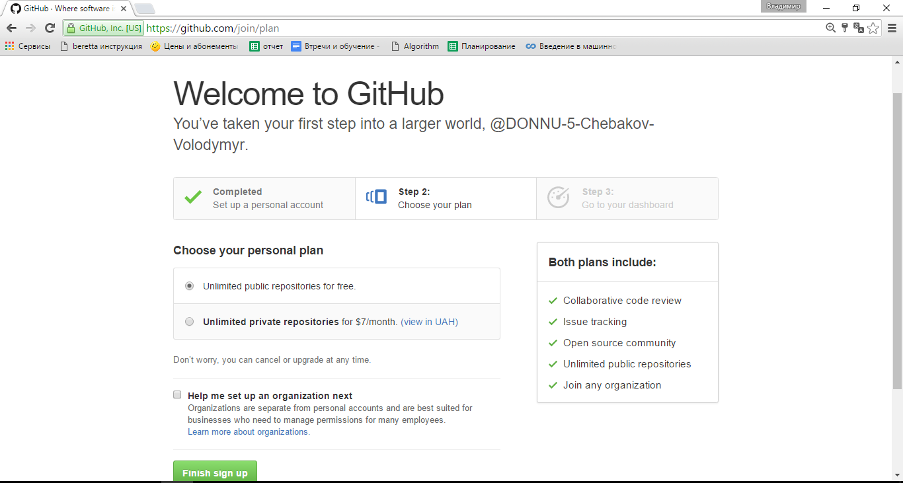
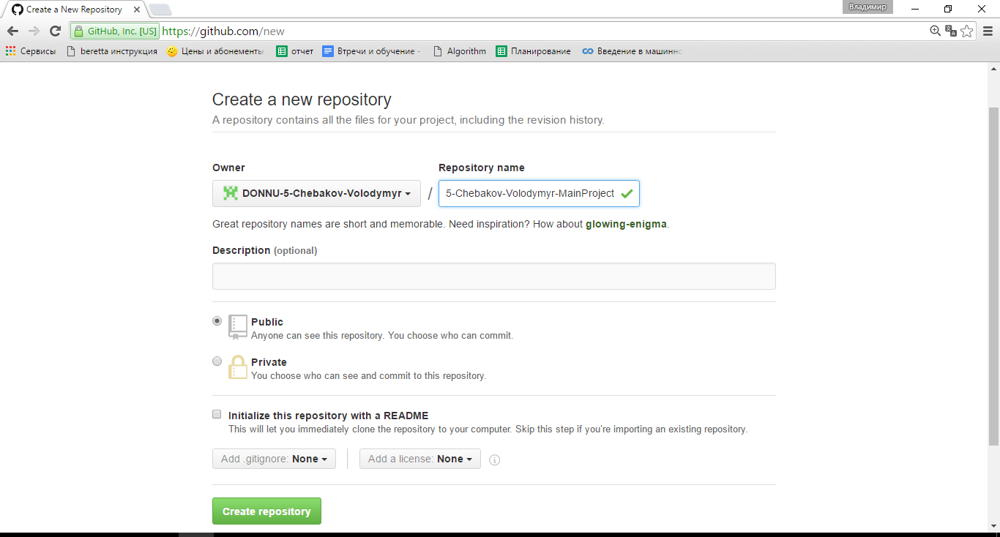
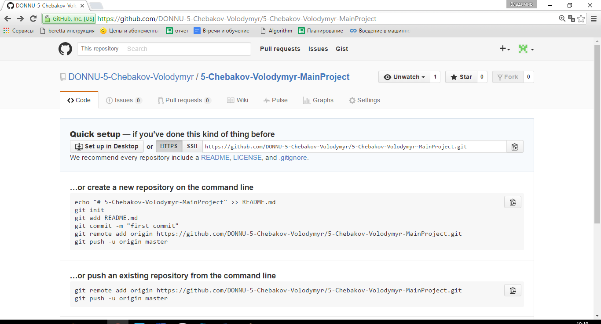
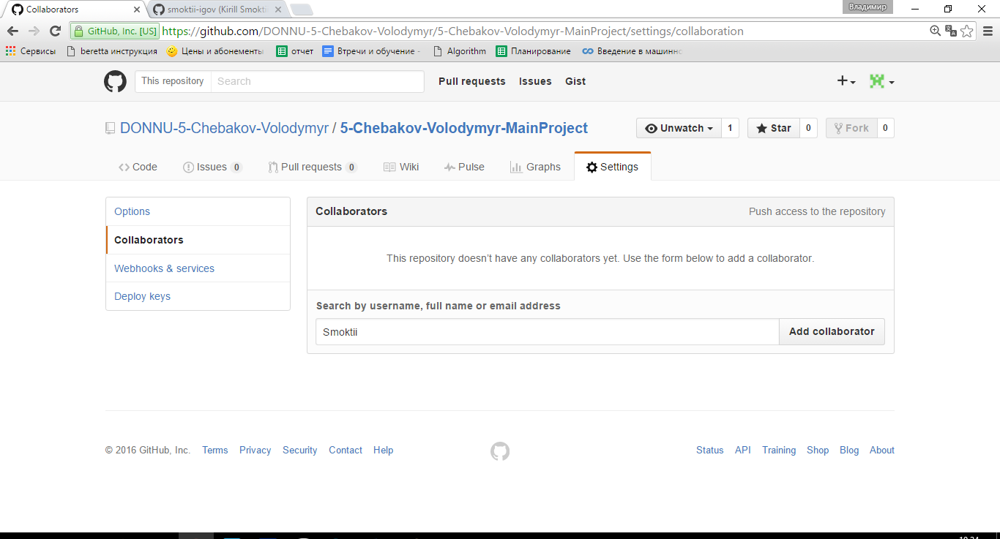
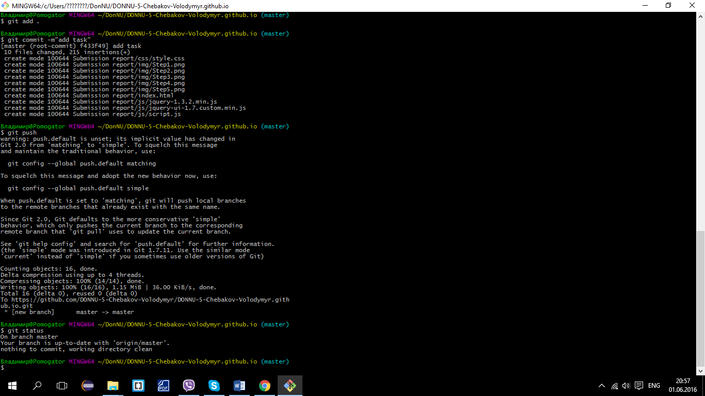

Заполнил поля - username, email и нажал кнопку Sign up for GitHub

Здесь я выбрал бесплатный репозиторий и нажал кнопку Finish sign up На почту, которую я указал при регистрации, пришло письмо с просьбой подтвердить регистрацию и email

GitHub сразу предлагает создать новый репозиторий, я ввел название и нажал кнопку Create repository
Регистрация закончена. Репозиторий создан

Для того чтобы добавить соавтора я выбрал вкладку Settings

Выбрал слева вкладку Collaborators В поле ввел почту Smoktii@gmail.com и нажал Add collaborator
Соавтор добавлен
Для использования GitHub с локального компьютера я скачал и установил Git Bash

В Git Bash я захожу в необходимую папку с помощью команды cd.
Выполняю 2 команды git init и git clone для того чтобы связать текущую папку с GitHub и сделать ее копию у себя на компьютере.
Далее я использую команды: git add . для добавления изменений в текущую папку. git commit -m "add task" для того чтобы Git сохранил изменения на локальной ветке. git push для отправки изменений на GitHub. git status для проверки.